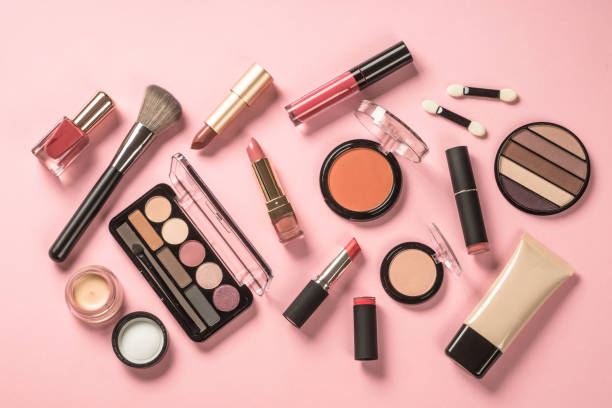

Novidades sobre a melissamartins
Por: melissamartins
A melissamartins está sempre arrasando! Seja bem-vinda ao blog dela, cheio de novidades, fotos e muito amor!
Bem-vinda ao meu blog!

Por: melissamartins
A melissamartins está sempre arrasando! Seja bem-vinda ao blog dela, cheio de novidades, fotos e muito amor!

Por: melissamartins
Olha que linda! Esse é o segundo post do blog da melissamartins!

Por: melissamartins
Oii! Aqui vão minhas dicas fofas pra ficar linda sem exagero:
✨ 1. Pele limpinha: sempre lava o rosto antes de passar qualquer coisa.
✨ 2. Hidratante + protetor solar: é o segredo da pele bonita!
✨ 3. Lip balm rosa: deixa a boca hidratada e com uma corzinha fofa.
✨ 4. Blush levinho: só um pouquinho nas bochechas pra ficar com cara de saudável.
✨ 5. Rímel de leve: só uma camadinha pra destacar o olhar.
✨ 6. Sempre tirar antes de dormir: nunca dorme de maquiagem!
Qual dica vocês mais gostam? Me conta nos comentários! 💖